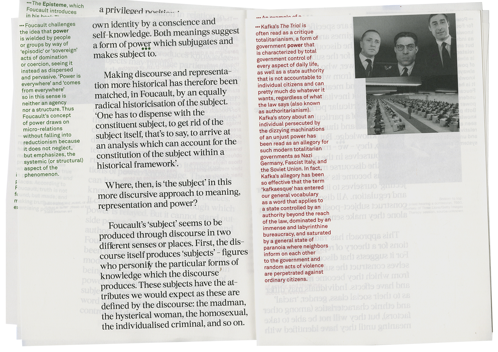
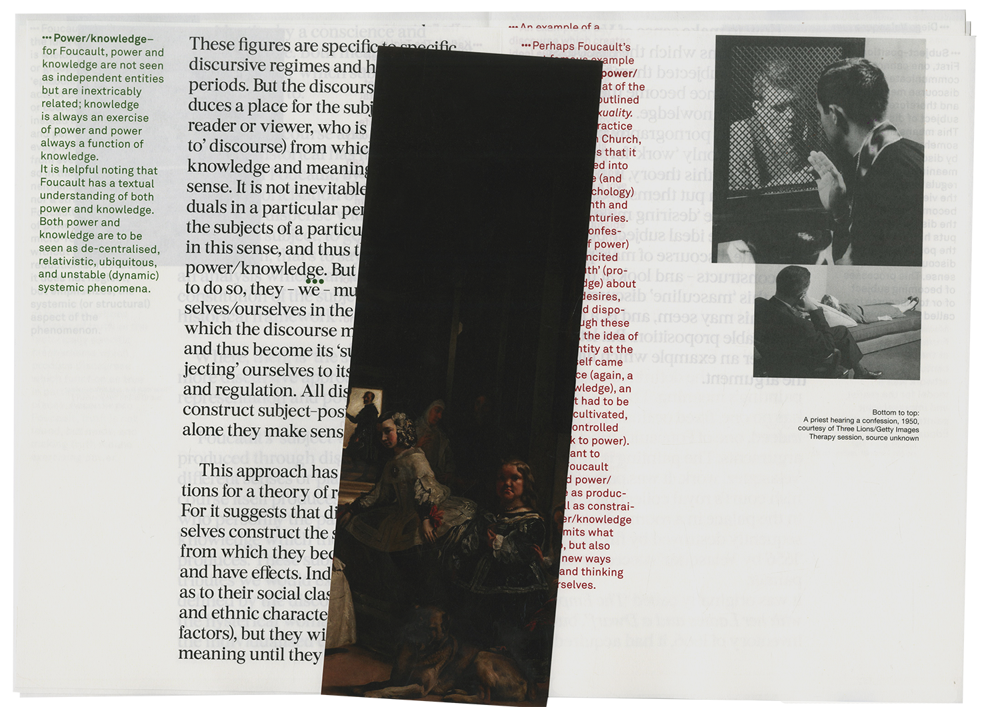
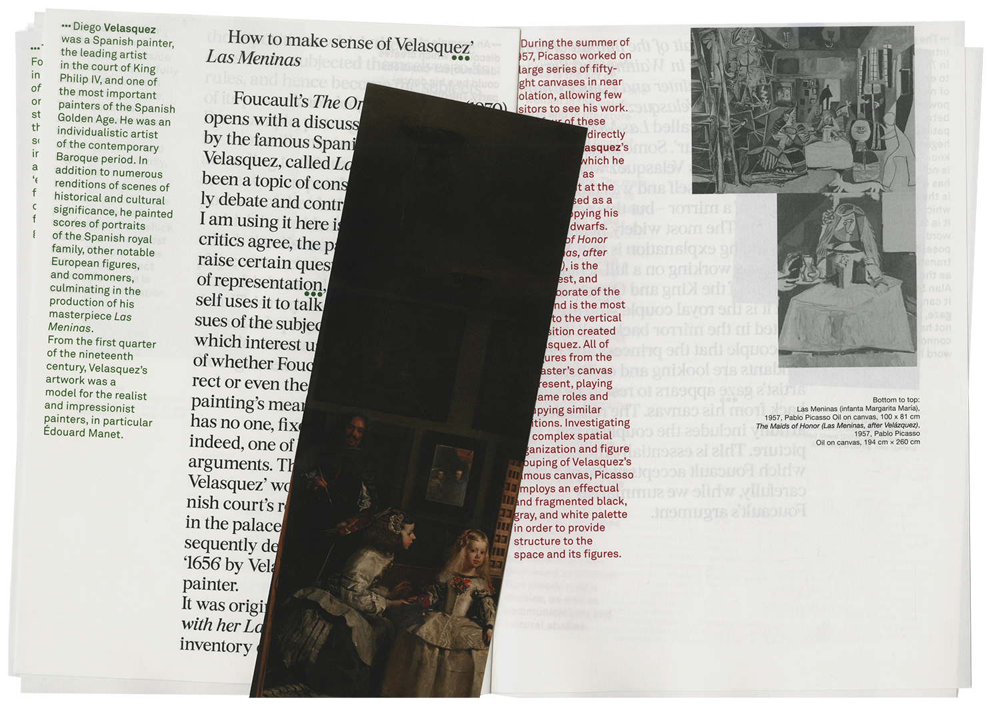

The Work of Representation ・ Sophia Attigui
home
previous project
next project
home
previous
next
The work of Representation
210x287mm
2017
An informal redesign of Stuart Hall’s ‘Work of representation’ consisting of, on the one hand, a very objective clarification of its main concepts, and on the other, a very subjective, and broad, re-interpretation of those same concepts.
  